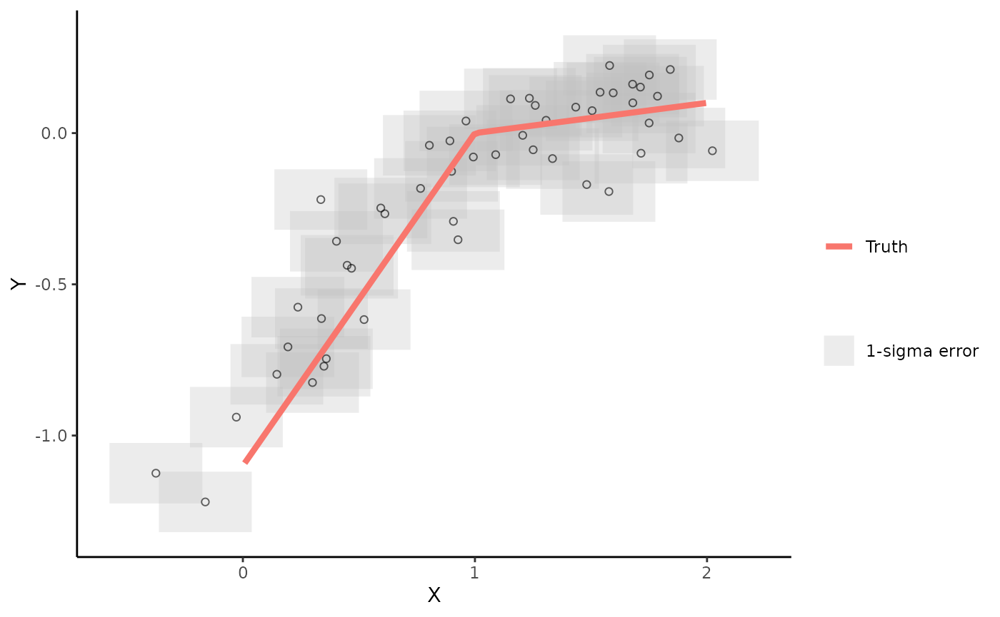
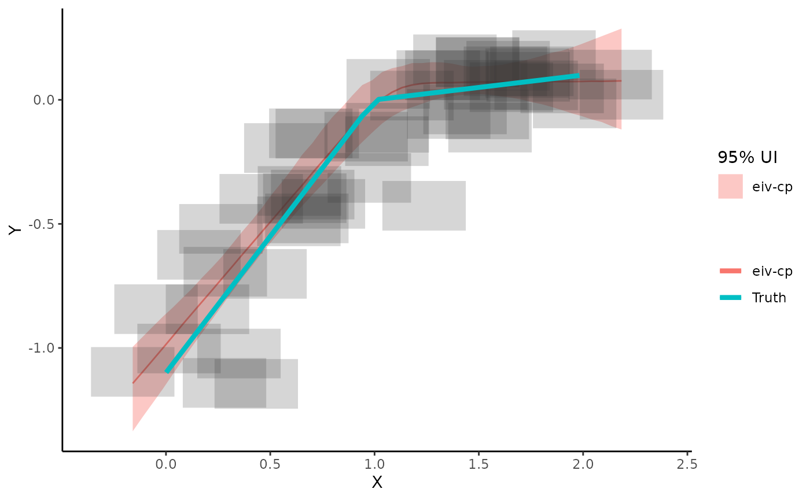
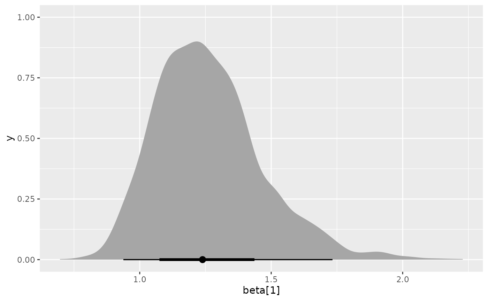
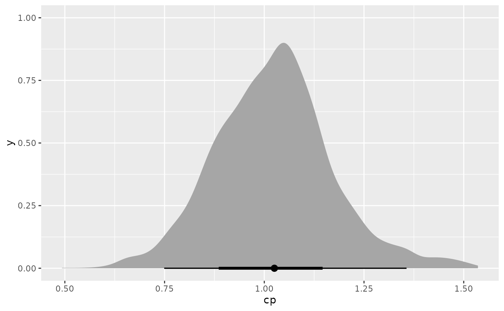
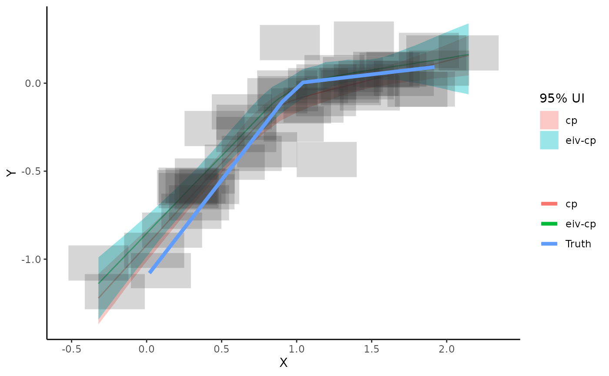

Bayesian Errors-in-Variables Change-Point Linear Regression
CPTutorial.RmdIntroduction
Here I am going to give you a starting point for fitting a Bayesian errors-in-variables, change-point regression model for unevenly spaced time series data, assuming a single change point and measurement errors. We’ll start by simulating some data with a known change point and then we’ll see if the change-point model can detect it.
Model specification
When it comes to the model specification recipe, the ingredients are
The process model, which relates to the expectation of what’s underlying the observed data. The process model will be governed by a set of parameters that need to be estimated.
The data model, which contains assumptions about how the data are generated and incorporates data uncertainty. The data model links the observed data to the underlying process.
Priors, which contain assumptions about the parameters we are estimating. Priors can be used to impose constraints on model parameters based on apriori information.
process model
For our specification, we’ll assume that the expected value of our observed outcome, \(y\), has a changing linear relationship with the expected x, \(\mu_x\), such that
\(\mu_y = \alpha + \beta_1(\mu_x - cp) \hspace{2em} \text{for } \mu_x < cp\)
\(\mu_y = \alpha + \beta_2(\mu_x - cp) \hspace{2em} \text{for } \mu_x \geq cp\)
In other words, the linear relationship between \(\mu_x\) (the expected value of x) and \(mu_y\) changes at some time point (cp). The measurements of \(x\) are related to \(\mu_x\) via a normal distribution
\(x \sim N(\mu_x,x_{err}^2)\)
where \(x_{err}\) are the observed measurement errors.
- Note, by subtracting the change point (cp) from \(\mu_x\) in the regression equation we can interpret the intercept (\(\alpha\)) as being the expected value of y at the point where the change point occurs.
data model
We’ll link the observations to the process through a normal data model.
\(y \sim N(\mu_y, \sigma^2)\)
If we have measurement error for the ys here, which we’ll call \(y_{err}\), then we can update the data model to be
\(y \sim N(\mu_y, \sigma^2 + y_{err}^2)\)
priors
We need priors for all unknown parameters. The prior on the change point should constrain the change point to occur somewhere within the range of the observation years.
If you are interested in digging deeper in to the model specification, here is the JAGS specification for this particular model, otherwise feel free to ignore this next part and move straight to the Simulate data section.
cp_model <-
'model{
## data model
for(j in 1:n_obs)
{
y[j]~dnorm(mu_y[j],tau[j])
mu_y[j] <- alpha + beta[C[j]]*(mu_x[j]-cp)
C[j] <- 1+step(mu_x[j]-cp)
x[j] ~ dnorm(mu_x[j],x_err[j]^-2)
mu_x[j] ~ dnorm(0,0.5^-2)
tau[j] <- (y_err[j]^2 + sigma^2)^-1
}
##Priors
alpha[1] ~ dnorm(0.0,10^-2)
beta[1]~dnorm(0.0,10^-2)
beta[2]~dnorm(0.0,10^-2)
sigma ~ dt(0,4^-2,1)T(0,)
cp ~ dunif(x_min,x_max)
for(i in 1:n_pred)
{
mu_pred[i] <-alpha + beta[Cstar[i]]*(x_pred[i]-cp)
Cstar[i] <- 1+step(x_pred[i]-cp)
}
}
'Notes on the model setup:
This setup makes use of the step function in JAGS to decide if \(\beta_1\) or \(\beta_2\) is required, where step(x) = 1 if \(x\geq 0\) and 0 otherwise.
Normal distributions in JAGS are always specified with a precision parameter where precision = 1/variance.
I’ve add in a prediction step in the JAGS model to get model-based predictions for a grid of x values (\(x_{pred}\)).
Simulate data
One of the best ways to get a feel for a model and it’s limitations is to use simulations. We can use the EIVmodels package to simulate data, with measurement errors, that has a single change point. Below I’m simulating 50 data points where x ranges from 0 to 2 (by default), the change point occurs at a value of \(x = 1\), the slope = 1.1 before the change point (\(\beta_1\)) and 0.1 after the change point (\(\beta_2\)) . The measurement errors for \(y\) and \(x\) are set to 0.1 and 0.2 respectively.
## # A tibble: 50 × 6
## x x_err y y_err true_y true_x
## <dbl> <dbl> <dbl> <dbl> <dbl> <dbl>
## 1 1.08 0.2 -0.278 0.1 -0.155 0.859
## 2 0.783 0.2 -0.0837 0.1 -0.118 0.893
## 3 0.579 0.2 -0.445 0.1 -0.542 0.507
## 4 1.43 0.2 -0.102 0.1 0.0243 1.24
## 5 1.71 0.2 0.142 0.1 0.0475 1.48
## 6 1.67 0.2 0.196 0.1 0.0747 1.75
## 7 1.98 0.2 0.107 0.1 0.0961 1.96
## 8 0.803 0.2 -0.518 0.1 -0.398 0.638
## 9 1.13 0.2 0.0431 0.1 0.0422 1.42
## 10 1.29 0.2 -0.0421 0.1 0.0168 1.17
## # … with 40 more rowsThe output data will contain the simulated \(x\), \(y\) data as well as the measurement errors that were supplied. It will also contain the “true” underlying process, which can be used for comparison purposes later. Here’s where you can play around with the simulation by changing the parameter values to get different datasets with varying characteristics.
Now, plot the simulated data and add the true underlying process that generated \(y\). When we fit the change-point regression model we are trying to estimate the “Truth” line.
plot_dat(cp_dat,
add_truth = TRUE)
Run the EIV 1-change-point regression model
Now we’re going to pretend that our simulated data is real life data (i.e., we don’t know the parameter values). So we want to run the model and estimate the parameters. We can then compare the true values of the parameters to the posterior distribution for the parameters to see how the model performs.
We can use the EIVmodels package to fit an EIV change-point regression model using the run_mod function. Specify the model argument as `model = “cp”.
mod_eiv_cp <- run_mod(cp_dat,
model = "cp")## module glm loaded## Compiling model graph
## Resolving undeclared variables
## Allocating nodes
## Graph information:
## Observed stochastic nodes: 100
## Unobserved stochastic nodes: 55
## Total graph size: 924
##
## Initializing model## No convergence issues detectedResults
We can plot the results (and add the true line) using the plot_res function as follows:
plot_res(mod_eiv_cp,
add_truth = TRUE)
To access the parameter summaries from the model we need to run the par_est function.
mod_cp_res <- par_est(mod = mod_eiv_cp)
mod_cp_res$par_summary## # A tibble: 5 × 10
## variable mean median sd mad q5 q95 rhat ess_bulk ess_tail
## <chr> <dbl> <dbl> <dbl> <dbl> <dbl> <dbl> <dbl> <dbl> <dbl>
## 1 alpha -0.0412 -0.0440 0.0859 0.0689 -0.168 0.0947 1.00 965. 932.
## 2 beta[1] 0.979 0.963 0.150 0.140 0.774 1.24 1.00 981. 923.
## 3 beta[2] 0.174 0.210 0.395 0.116 -0.0540 0.389 1.00 1026. 979.
## 4 cp 0.914 0.900 0.148 0.117 0.704 1.16 1.00 995. 937.
## 5 sigma 0.0341 0.0285 0.0258 0.0261 0.00241 0.0825 1.00 1024. 962.In this summary, q5 and q95 provide the upper and lower bounds of the 90% uncertainty intervals. Note here whether or not the 90% uncertainty intervals contain the true parameter values.
If you would like to get a more detailed look at the posterior distributions for the parameters you can pull the posterior samples from the model object created above and we can use the tidybayes package to create some plots.
First, get the sample_draws which contains the posterior samples for the parameters and the model-based estimates for the expected value of y.
mod_eiv_cp$sample_draws## # A tibble: 3,000 × 59
## .chain .iteration .draw alpha `beta[1]` `beta[2]` cp deviance
## <int> <int> <int> <dbl> <dbl> <dbl> <dbl> <dbl>
## 1 1 1 1 -0.160 1.22 0.311 0.636 -88.5
## 2 1 2 2 -0.0755 0.982 0.247 0.837 -97.5
## 3 1 3 3 -0.0835 0.714 0.441 1.01 -64.8
## 4 1 4 4 -0.0678 1.17 0.250 0.772 -99.3
## 5 1 5 5 0.128 0.774 0.198 1.27 -86.9
## 6 1 6 6 -0.191 1.16 0.322 0.704 -76.3
## 7 1 7 7 -0.0546 0.738 0.270 0.995 -84.0
## 8 1 8 8 -0.00664 0.812 0.174 1.12 -111.
## 9 1 9 9 -0.106 1.01 0.325 0.829 -83.1
## 10 1 10 10 0.132 0.917 -0.158 1.17 -101.
## # … with 2,990 more rows, and 51 more variables: `mu_pred[1]` <dbl>,
## # `mu_pred[2]` <dbl>, `mu_pred[3]` <dbl>, `mu_pred[4]` <dbl>,
## # `mu_pred[5]` <dbl>, `mu_pred[6]` <dbl>, `mu_pred[7]` <dbl>,
## # `mu_pred[8]` <dbl>, `mu_pred[9]` <dbl>, `mu_pred[10]` <dbl>,
## # `mu_pred[11]` <dbl>, `mu_pred[12]` <dbl>, `mu_pred[13]` <dbl>,
## # `mu_pred[14]` <dbl>, `mu_pred[15]` <dbl>, `mu_pred[16]` <dbl>,
## # `mu_pred[17]` <dbl>, `mu_pred[18]` <dbl>, `mu_pred[19]` <dbl>, …Now let’s look at the posterior distributions for \(\beta_1\) and \(\beta_2\) and the change-point (cp). We’ll use the stat_halfeye() function from the tidybayes package.
ggplot(mod_eiv_cp$sample_draws, aes(x = `beta[1]`)) +
tidybayes::stat_halfeye() 
ggplot(mod_eiv_cp$sample_draws, aes(x = `beta[2]`)) +
tidybayes::stat_halfeye() 
ggplot(mod_eiv_cp$sample_draws, aes(x = cp)) +
tidybayes::stat_halfeye() 
What if we didn’t assume the EIV component in the model?
If you wish the ignore the EIV component in the change-point model then you can use the run_mod function from the EIVmodels package and specify EIV = FALSE.
mod_cp <- run_mod(cp_dat,
model = "cp",
EIV = FALSE)## Compiling model graph
## Resolving undeclared variables
## Allocating nodes
## Graph information:
## Observed stochastic nodes: 50
## Unobserved stochastic nodes: 5
## Total graph size: 809
##
## Initializing model## No convergence issues detectedWe can then compare both models to the truth.
plot_res(mod_cp,
mod_eiv_cp,
add_truth = TRUE)